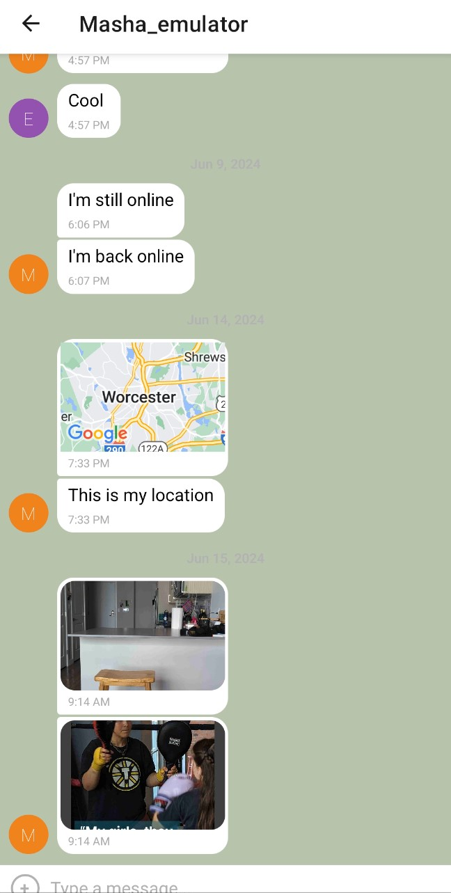
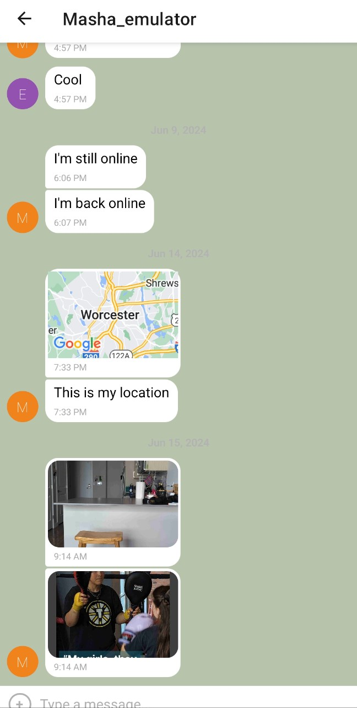

A responsive website, t completed for careerFoundry as the final assessment of their Intro to Frontend Development course. It's a responsive website made using HTML and CSS. It's linked to the most current projects completed for careerFoundry's Full-Stack Development Program.
Small web application built with a combination of HTML, CSS and JavaScript. It was an exercise to practice using an external API and building modals which enable the user to see data points in detail.
Server-side component of a "movies" web application. The application will provide users with access to information about different movies, directors, and genres. Users will be able to sign up, update their profile information and create a list of favorite movies. This server-side project provides a database to host the movie and user information, as well as an API to communicate with said database.
This is a single-page, responsive app which supports an existing server-side REST API and a MongoAtlas-hosted database. Both this app and the connected API were built as part of an exercise for the CareerFoundry Full Stack Development course, aimed to familiarize the student with the MERN tech stack.
The interface allows movie enthusiasts to create an account and browse through a collection of movies, finding out more information about each picture, as well as saving any particular favourites to their profile.
A serverless PWA built with React, using a test-driven development technique. The main purpose of the app is to display information about events happening in cities all over the world. It's an exercise to practice TDD workflow as well as learn several data visualization techniques. Important to note, this app uses the Google Calendar API to fetch upcoming events.
 

A project created for careerFoundry's Full Stack Web Development Course. It's a chat app for mobile devices made using React Native as the framework. The app will provide users with a chat interface and options to share images and their location
The project objective was to use Angular and build the client-side component called forReel based on a previously built REST API and database. It's a single-page, responsive movie app with routing and several interface views.